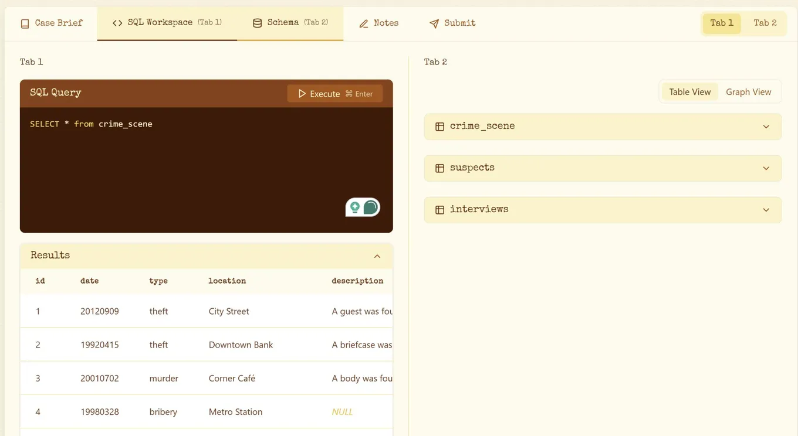

Learn SQL by solving a murder mystery
Originally posted on LinkedIn, March 27, 2025.
SQLNoir is one of the coolest sites I’ve come across. Instead of reading documentation or memorizing commands, you play a private investigator solving a murder mystery with SQL queries.
You get a case and a dataset, then use commands such as SELECT, JOIN, and WHERE to extract clues. Every correct answer brings you closer to the truth.
The format makes learning SQL intuitive. Each stage introduces another useful tool while you focus on investigating the data rather than studying syntax.
